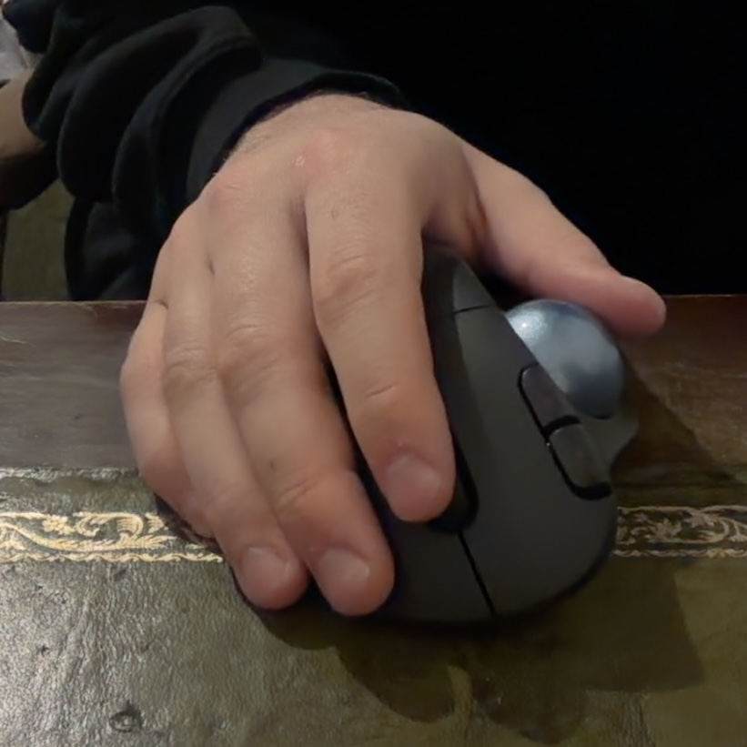

if you can read this sentence, your eyes are working.
how to use your eyes to read websites
a comprehensive guide for beginners.
step 1: locate your eyes
your eyes are typically found on your face. if you are having trouble finding them, try touching the front of your head and feeling for two spherical objects. they should be roughly above your nose and below your forehead. if you have found zero or more than two eyes, please consult a professional.
step 2: open your eyes
this is crucial. many users report that websites appear completely black when their eyes are closed. to open your eyes, simply relax the muscles that are keeping your eyelids shut. you should now see things. if you see nothing, check that the lights are on.
step 3: point your eyes at the screen
rotate your head and/or eyeballs until the screen is within your field of vision. the screen is the glowing rectangle in front of you. not the window. that is outside. focus on the screen.
step 4: identify shapes
you should now see various shapes on the screen. some of these shapes are called "letters". letters are grouped together to form "words". if the shapes appear blurry, try moving closer to the screen, or further away, or consult an optician.
step 5: decode the words
using knowledge you acquired as a child (hopefully), translate the letter shapes into meaning. start from the left side and move right. when you reach the end of a line, return to the left side and drop down one line. repeat until you run out of words or lose interest.
step 6: scroll

if you have successfully read all visible words but suspect there may be more, use your hand to operate the mouse wheel or touchpad. this reveals additional content. return to step 4 and repeat as necessary.
troubleshooting
- i cannot see anything: are your eyes open? is the monitor on? are you facing the correct direction?
- the words are moving: stop shaking your head.
- everything is too small: press CTRL and + at the same time. you are welcome.
- i understand the words individually but not together: that is not an eye problem. that is a skill issue.
congratulations! you have completed the tutorial. you are now qualified to browse the internet.